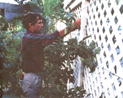
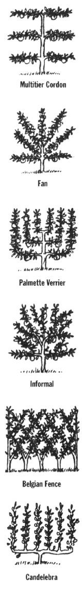

G A R D E N & Y A R D
Your fruit trees will hit their prime in five years and will continue producing fruit until the
ripe old age of 25.
From midsummer through late fall, John Hooper harvests 600 pounds of apples a year from his garden. Yet he lives in a mild, often fog-shrouded coastal climate in northern California-not exactly opti mal fruit-growing weather. His orchard, consisting of 12 seven-year-old trees, is tucked away in the tight quarters of his backyard. How does he achieve such high production in such a compact space without a lot of fruit-inducing chill or summer sun? He practices the old art of espalier (es-PAL-yay)-training dwarf species to grow in flat, two-dimensional forms, usually against fences and walls. "I've counted 70 apples on just one of my espalier trees," boasts Hooper.
The technique was developed in the 16th century, out of the practical need for growing fruit in such marginal climates as northern France and southern England. The early French and English discovered that if they bent apple-tree branches horizontally, they could direct energy away from vigorous vertical growth and into producing spurs (those stubby lateral branches that eventually flower and produce fruit). In addition, by growing the tree flat against a wall or fence, they could create a favorable microclimate in which the wall radiated heat and provided shelter. As they do today, growers kept the trees dwarfed for ease of management.
"If you have a small garden but big ambitions, you can grow fruit without having one or two trees dominate the entire area," says Hooper, who, along with caring for his orchard, owns a nursery dedicated to espaliered fruit trees and ornamentals. Espalier trees produce more fruit per foot than do ordinary fruit trees-mature forms reap from 30 to 60 pounds of deli cious-tasting fruit, from apples and pears to peaches and pomegranates.
Some growers simply enjoy the aesthetic value of espaliered trees, with their traditional symmetrical branch forms resembling fans and candelabras. These forms are created by snipping off unwanted branches and training others to move down toward the desired position. These unique forms make exquisite garden focal points: during the dormant season of winter, the unusual branching patterns are revealed; during the spring, apple trees become festooned with blossoms in varying shades of white and pink; during the summer, the trees go through a two- or three-week stage of dramatic blossoming. Also, because you can train them to grow against almost any supportive structure, espaliered trees are naturals as living shields to hide unattractive walls, fencing, or compost bins.
Along with pear trees, apple trees are the traditional espalier subject because their spurs live for years producing fruit. Espalier apple trees bear fruit at a young age and are versatile in nature, with their supple, easily trained new growth. However, you'll need to practice delayed gratification because most of these trees take approximately three years to mature and reach the desired design. For some growers, this is too large a drawback. But if you don't mind the wait, your patience and creativity will pay off in the long run, with mounds of McIntosh and pounds of Pippin displayed on beautiful, bountiful tree forms.
THE TRADE-OFF: Most espaliered trees need approximately three years to attain the desired design and reach maturity. If you can stand the wait, you'll be rewarded with beautifully structured trees and bushels worth of fresh apples.
You'll want to consider which particular kinds of apples will be suitable for your climate. "Among the 5,000 apple trees grown worldwide, wherever you live, some variety will suit your climate," assures Hooper. "Plus there are no apple trees that are not amenable to espalier." In choosing the kind of apple tree to espalier, be aware of the extremes of your hot and cold climate. The chill factor is the period of cold needed by apples and other deciduous fruits to break their winter rest. This is an adaptive feature to prevent plants from breaking dormancy on warm winter days.
Apples have chilling requirements of 200 to 1,700 hours at a temperature of 32°F to 45°F. If you live in a southern state, however, there are apple varieties available with low winter-chill requirements. There are also varieties with summer heat resistance (See "Popular Varieties" on page 50).
Your choice may also depend on the kind of symmetrical design you'd like your tree to have. While there are many variations, the six basic forms of espalier are "multitier cordon," with its rows of branches growing horizontally; "candelabra," with its vertical rows of branches growing off a single horizontal; "palmette verrier" with its U-shaped branching pattern; "fan;" with a radiating branching pattern; "informal," that are more naturally shaped; and "Belgian fence," several Vshaped espaliers woven together.
The traditional "formal" shapes generally require more attention than the "informal" ones, which grow in shapes that naturally follow the tree's growing pattern. Basically, the different styles offer design flexibility. Of the formal styles, for instance, the multitiered horizontal cordon takes the longest to train, but, once established, lends itself well as a garden-bed divider. A single cordon, grown vertically, horizontally, or even at an angle, is the simplest espalier style and also works well as a divider.
The palmette verrier design, with its horizontally growing branches turning vertical at the ends, or the vertical form of candelabra, are great if you want to plant several trees against a structure without having them grow into one another. The horizontal cordon shape would be an easy match for a McIntosh's branches, which naturally grow horizontally. A Newtown pippin would be great for a fan shape because of its natural upright branching pattern.
"It's not imperative to make such matches between the design and tree-it just makes training them that much easier," says Hooper. "Pick what you like and what's suitable for your climate, and simply realize that it's going to take some time to mature."
THE ONE-YEAR WHIP: Once you've decided on the type of fruit you want based on your climate and the design you favor, select and purchase the youngest tree possible. Look for a one-year "whip," or relatively unbranched tree, growing from dwarf or semidwarf bare-root stock. If space is very much at a premium, use dwarf root stock; if you want a vigorous growing tree, use semidwarf. Buy them bare root during the dormant season-which, depending on where you live, can be anywhere from October to late April. Ideally, the earlier you can get a tree planted in the dormant season, the better the roots establish themselves.
Next, prune the whip way back (before or after planting) so it's only 18" to 24" tall. "The trees look like pathetic sticks," says Hooper, "but it's the only way to encourage the growth of lower lateral branches." Nutrients would flow to the top branches if you didn't cut back the leader and allow an even flow of nutrients throughout the plant. "With espalier, the whole point is to keep the lower branches fruitful and vig orous so that the fruit is strictly within reach of the ground:' As the tree matures, pruning and maintenance is a snap, which is why it's often favored by elderly gardeners or people with disabilities.
PLANTING: You'll treat your bare-root espalier no differently than any other bare root when it comes to planting. Of course, you must give thought to your climate and the best exposure. Apple trees need approximately six hours of daily sunlight (southern or western exposure is best). If your summers are extremely hot, espaliered apple trees may need the shade and cooler temperatures of an east wall or fence.
Deciding what surface to grow your espalier tree against may be as simple as using what you've got. Chain-link fences work great, as do wood fences, the walls of your home, and trellises. You can also create your own supportive structure with wire stretched between pipes or wood posts treated with a preservative. Fruit trees trained on post and wire fences will do best if they run from north to south, allowing the western sun to penetrate.
If a trellis is not used, the tree will need to be trained onto a supportive structure of wires. If your espalier is freestanding, use galvanized 12- to 14-gauge wire stretched between 4' x 4' posts. The horizontal bars of the trellis or the horizontal wires will be spaced anywhere from 15" to 18" apart. If you'd like to emphasize a more skeletal look for your tree, set the wires closer to 18" apart. Wires will also be used against a fence or wall, threaded through eye screws.
When planting your tree, allow at least 8" of space between it and a wall or fence to ensure adequate air flow. This also gives the trunk room to grow. Keep in mind that a tree that fills a 4' x 4' trellis will ultimately fill an 8' x 8' space. Space your apple trees 6' to 8' apart. Of course, if your apple variety is not a self-pollinator, you will most likely need to plant more than one of a different variety unless there are other varieties in your immediate neighborhood.
TRAINING: Right from the start, keep the tree tied loosely to the trellis or wires, using plastic ties or plain cord. This enables you to train those branches to grow in the form you want. Now and then, check that the ties are not "choking" the branches. As the tree's lateral branches begin to grow, you'll simply give them some guidance.
After the first growing season, when you've gotten about 10" to 12" of growth on a branch, begin pruning certain branches while allowing others to grow, depending on your design. For most styles, with the exception of the fan and Belgian fence, cut back the young branches leaving only the best three that have grown 4" to 6" from the whip. Then bend and train these shoots along the first wire 4" to 6". [Note: Specific training techniques for the varying styles are outlined in Hedges, Screens, and Espaliers (HP Books, 1983)].
As the tree begins to grow, your primary job is to prune unwanted branches as often as necessary to help develop the basic structure. You'll get used to repeating pruning steps each season and cutting off unwanted lateral branches that will try to grow in a way that does not mesh with your intended design. Every week or so, grab your pruning sheers and head for your espaliered tree.
Again, although your apple tree may bear fruit the first summer, you should not let it mature until the tree's third growing season. Snip off young fruit when it grows to about cherry size. Most of the tree's first and second years of growth and vigor need to be focused into root, branch, and leaf production to get it completely established. "It's hard not to let fruit mature, but it pays tremendous dividends down the road in the third season," says Hooper.
Even into the third season and thereafter, you'll have to be strict about how much fruit you allow to grow. After the petals fall, the fruit will form in clusters and, if you leave all this fruit on, you'll inevitably reap lots of small fruit instead of fewer nice-size ones. "People are shy about thinning the fruit on their trees," he says, "but you don't want mature fruit rubbing against each other."
MAINTENANCE: Hooper grows all of his fruit trees organically. "A lot of what I do is just look at the plants carefully," he says. "The espalier lends itself perfectly to this because it's more opened up; you're more likely to find things on it." Hooper uses a petroleum-based dormant spray during the winter. In the spring, Safer's insecticidal soap kills aphids and various other pests.
Be conservative with fertilizer; it is possible to overfeed. Use fish emulsion, blood meal, or blood and bone mix, and a good top dressing around the base of the tree to get it off to a good start. Use a top dressing of fertilizer at the end of your winter season. "You want that nutrient to penetrate the soil by the time the tree comes out of its dormant season in need of a good rush of nutrients," says Hooper. Later, only feed the tree if it shows obvious signs of deficiency, such as yellowing leaves. In the first season, water regularly as you would any fruit tree, twice a week or more in hot weather. Semidwarf and dwarf roots will continue to need regular deep watering.
If you don't want to wait for your espalier tree to become mature enough for you to harvest fruit or you want the artistic design of the branches now, there is a solution. You can purchase or mail-order espalier trees that have been trained and already have their basic shape. Depending on what the espalier nursery has in stock, almost any apple variety can be shipped during the dormant, bare-root season. You can order a tree that has been trained from one season to six or seven, if you like. Of course, for the die-hard do-it-yourself-ers, the very young whips are available as well.
Whether you've raised it from a young whip or not, your espaliered fruit tree will be at its prime at five years of age and will offer you the finest of fruits for the following 25 years. In 20 years, that's a ton of fresh apple pies.
Editor's Note: For more information, you can call Arbor and Espalier Company at 415/626-8880.
Cordon: Most traditional form of espalier. Grows horizontally for a distance, lending itself well as a garden-bed divider. Can be a single cordon, also known as "rope," or a multicordon, generally with three tiers of branches. The multicordon takes two to three years to reach definition. May take longer on the East Coast because of shorter growing seasons.
Palmetto Verrier: Vertical branching adds nice definition between trees planted against a wall or fence. Horizontally trained branches are gradually trained into upright positions. Design can take up to three years to reach definition. Fan: Suitable for areas requiring vertical coverage; will best cover a square space. Style defines quickly; can have clear definition within one year. Branches angled at 45° can be raised or lowered for greatest fruit yield.
Informal: Tree is allowed to take on a more natural shape; requires simple pruning to keep on a two-dimensional plane. Somewhat easier to train-simply balance the tree's aesthetic symmetry as the branches begin to grow.
Belgian fence: Lattice effect offers one of the most formal looking styles. Requires three trees or more to create overlapping Vs and two modified Vs to create finished ends. Within one year, the beginning design of overlapping Vs is well outlined.
Candelabra: Also known as "Brooklyn Botanical." Several vertical branches stem off one horizontal base. Fairly easy to train and maintain.
McIntosh: Most adaptable to any espalier design; very hardy variety does well in cold climates yet prefers only 600 hours of winter chill; fruits ripen late in the midseason. Can be self-pollinating, but will be more fruitful if pollinated by different apple variety.
Dorsett Golden: Makes an especially nice oblique design such as a fan; prefers only 400 hours of winter chill; fruit ripens early: selfpollinating.
Anna: Lends itself well to any espalier design; prefers only 400 hours of winter chill; fruit ripens early; requires a pollinator of a different apple variety.
Spitzenberg: Old-fashioned variety; makes very nice palmette verriers, horizontal cordons, and fans. Adaptable to many areas; hardy in cold winter locations despite its low winterchill requirement of 600 hours. Stiffer branches work well as cordon; avoid bending vertically in U-shape or candelabra. Prefers 600 hours or less of winter chill; has good summer heat resistance. Fruit ripens late in season; self pollinating.
Newtown Pippin: Stiffer branches work well as cordon; avoid bending vertically in U-shape or candelabra; prefers 600 hours or less of winter chill; has good summer-heat resistance: fruit ripens late in season; self-pollinating.
|
 |
 |
|